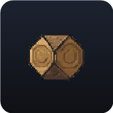

Atelier
Adventure Card — les outils de game design
Cartes
…
Calcul sur le serveur
…
🃏
Card Builder
Créer et modifier les cartes, les adversaires, la fatigue.
▶️
Lancer un calcul
Simulations et tests, calculés sur le Pi.
🗂️
Vue d'ensemble
Toutes les cartes, résolues au niveau voulu.
⚖️
Équilibrage
Matrice et courbe, jouées dans le navigateur.
🛠️
Mécaniques à coder
Ce que le builder a inventé et que le moteur ne fait pas encore.
🎮
Jouer
Le prototype, avec les cartes appliquées au jeu.